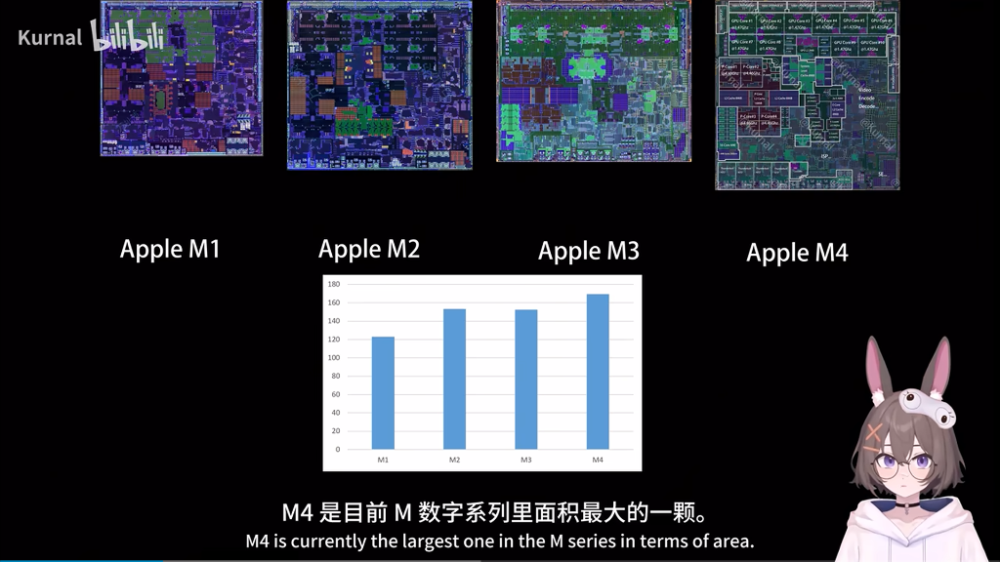
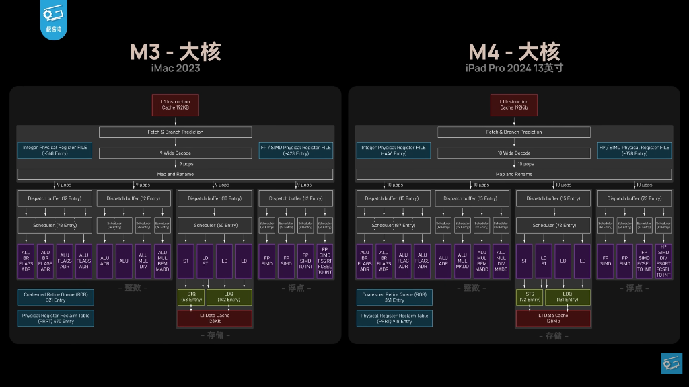
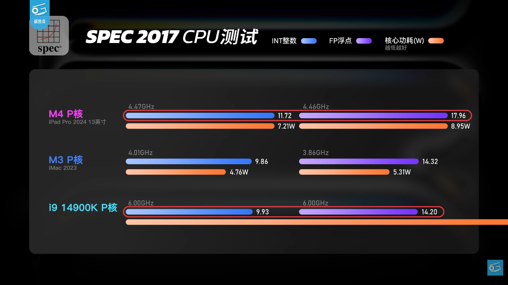
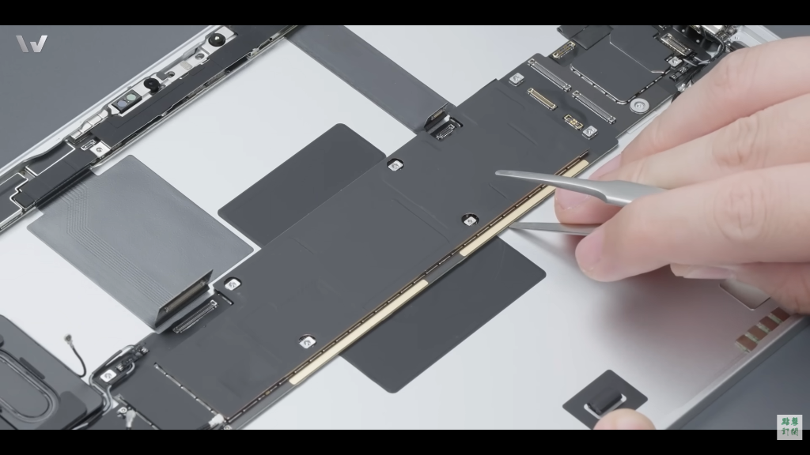

Apple M4: Maturity Over Experimentation
When we look back at the generational shift from the Apple M3 to the M4, the tech world expected a standard iterative update. Instead, if you look at the raw architectural data, we are looking at a strategic, multibillion-dollar reset. The M3 was an experimental gamble on the first generation of 3-nanometer technology. The M4 is the maturation of that vision, marking a definitive pivot from bleeding-edge instability to a high-yield, massive architectural paradigm.
This is an analysis of how Apple escaped the manufacturing nightmare of the M3 to build the silicon monster that is the M4.
The Node Pivot: Trading Density for Sanity
The real story of this transition starts at the TSMC foundry. The M3 was built on TSMC's N3B process, which proved to be a critical bottleneck. It used aggressive design rules like double patterning lithography to push transistor density to the absolute limit. The cost of this density was severe. Yields were reportedly stuck around a disastrous 55 percent, and the silicon itself suffered from notoriously high current leakage. This fundamental physical flaw meant the M3 drew significantly more power at idle, crippling its low power efficiency.
We saw the direct fallout of this in the M3 Pro, where Apple was forced to panic and pull back. They drastically trimmed core counts and dropped memory bandwidth to 150 GB/s just to keep the die area small enough to be economically viable.
With the M4, Apple abandoned N3B and pivoted to N3E. While it is still a 3-nanometer node, it serves as a simplified and highly stable evolution of the process. By relaxing specific design rules like the contact poly pitch, Apple achieved yields closer to 70 or 80 percent while simultaneously resolving the crippling leakage issues. This gave their engineering team the actual transistor budget they wanted in the first place. The base M4 expanded from 25 billion to 28 billion transistors, allowing for a much more complex microarchitecture without the manufacturing anxiety that plagued the prior generation.
Architecturally, this budget allowed Apple to scale the P-cores into distinct clusters. While the base M4 features a single cluster of 4 P-cores, the M4 Pro and Max variants scale this to two clusters of up to 6 cores each. A critical evolution in the M4's power management is the introduction of a true "down" state. Unlike previous generations where cores merely idled, M4 cores can report 100% "down residency," meaning the entire core and its associated cluster can be completely shut down by macOS to eliminate power draw entirely when not required.
Accepting The Massive Die: M1 to M4 Area Scaling
To fit all this new technology, Apple had to abandon the pursuit of ever-shrinking chips. In fact, they moved in the exact opposite direction. The M4 is a physically massive piece of silicon.

When you chart the raw die size across the generations, a clear trend emerges. The M1 started relatively small at ~120 mm². The M2 ballooned, but the M3 actually shrank slightly as Apple attempted to leverage the dense (but problematic) N3B node. With the shift to N3E for the M4, the physical footprint of the chip exploded to over 160 mm², making it the largest base die in Apple Silicon history. Apple essentially chose to throw physical area at the problem rather than fighting against TSMC's density limits.
- Transistor Count: 25 Billion vs 28 Billion (+12% Budget)
- Performance Core Area: 2.62 mm² vs 3.09 mm²
- Memory Bandwidth: 100 GB/s vs 120 GB/s (Transitioning to LPDDR5X)
Brute-Forcing a 10-Wide Architecture
For years, Apple sat comfortably at an 8-wide decoder width. The M3 made a subtle nudge toward 9-wide, but the M4 performance core finally makes the jump to a massive 10-wide architecture. This is the widest execution engine currently available in a consumer SoC.

To feed a 10-wide front end, you cannot just widen the pipes. You have to deepen the resource pool. The Re-Order Buffer and dispatch buffers are significantly larger, allowing the chip to hunt for instruction level parallelism much deeper within the codebase. Independent testing indicates average IPC gains of 7.3 percent for integer operations and 8.6 percent for floating point workloads over the M3. When you combine that with a massive clock speed jump from 4.05 GHz to 4.51 GHz, you end up with a single-core performance uplift of nearly 28 percent in synthetic benchmarks.
But the invisible trick making it all work involves thread mobility. In the M1 and M3 eras, macOS tended to park a thread on a core for seconds at a time. On the M4, the operating system rapidly moves threads every 0.3 seconds between cores and every 1.3 seconds between clusters. It is an incredibly clever scheduling trick to spread the thermal load across that expanded 3.09 square millimeter core area before the silicon hits a thermal wall.
Humiliating the x86 Flagship: SPEC 2017
The true testament to this 10-wide monster is its performance in SPEC 2017, the industry-standard benchmark for rigorous, sustained CPU execution. When placed head-to-head against Intel’s 6.0 GHz Core i9-14900K, the scale of Apple's architectural victory is staggering.

Despite running at a mere 4.47 GHz compared to the 14900K's extreme 6.00 GHz, the M4's performance core comprehensively dismantles the x86 flagship. In Integer operations, the M4 pushes a score of 11.72 against the 14900K’s 9.93, while drawing a minuscule 7.21W. Even more humiliating is the Floating Point outcome, where the M4 reaches 17.96 against the i9's 14.20, leveraging only 8.95W while Intel's power bar graphically rockets off the chart entirely. In fact, even the previous-generation 3.86 GHz M3 cleanly edges out the 6 GHz 14900K in FP (14.32 vs 14.20). This isn't just an architectural victory; it represents an absolute wall for traditional x86 power scaling.
The AI Hardware: SME2 and the Neural Engine Reality
This theme of maturity over proprietary experimentation extends directly into the M4's dual-pronged approach to machine learning. First, on the CPU side, Apple finally moved away from its closed-off hardware approach. In the M1 through M3 generations, Apple relied on a proprietary hardware unit known as AMX for machine learning math. With the M4, they adopted the ARMv9.2-A instruction set, and replacing their proprietary AMX blocks with standardized SME2 (Scalable Matrix Extension 2) units.
But make no mistake. Apple did not just pull an industry standard off the shelf. They essentially authored it. SME2 is widely understood to be the direct evolution of Apple's own AMX architecture, standardized and pushed upstream into the ARM instruction set. This matrix accelerator lives directly within each core cluster. It can sustain 2 TFLOPS of FP32 matrix math, completely opening up high performance AI computation to standard compilers like LLVM without forcing developers to ask permission through proprietary CoreML APIs.
However, the real focal point for heavy AI workloads is the 16-core Apple Neural Engine. Apple heavily markets the M4 Neural Engine at a staggering 38 TOPS in INT8 precision, which ostensibly doubles the 18 TOPS of the M3. But reverse engineering the hardware (source: Maderix) reveals a brilliant marketing illusion.
By bypassing CoreML to directly interface with the hardware pipeline, recent benchmarks show that the Neural Engine does not actually execute INT8 operations twice as fast. Instead, the hardware dequantizes INT8 weights to FP16 before the compute phase. The true peak performance remains 19 TFLOPS in FP16 regardless of the quantization format. The 38 TOPS figure is merely an industry marketing convention applied to paper specs.
| Configuration | FP16 TOPS | INT8 TOPS | Ratio |
|---|---|---|---|
| Conv 1024 (single) | 6.27 | 6.27 | 1.00× |
| Conv 2048 (single) | 7.16 | 8.54 | 1.19× |
| 8-chain conv 1024 | 12.54 | 13.31 | 1.06× |
| 32-layer deep conv | 18.50 | 18.83 | 1.02× |
| 64-layer deep conv | — | 19.00 | — |
While the raw throughput numbers are manipulated, the physical efficiency of the hardware is spectacular. The Neural Engine utilizes hard power gating that drops power consumption to exactly 0 milliwatts when idle. Under peak load, it delivers an astonishing 6.6 TFLOPS per watt, making it roughly 80 times more efficient per FLOP than an Nvidia A100. Furthermore, hardware probing (documented by Maderix) indicates the silicon is fundamentally a convolution engine. Standard matrix multiplications run three times faster when mathematically reshaped into 1x1 convolutions.
This reveals the optimal strategy for on-device AI. The ultimate LLM inference pipeline on the M4 is hybrid. Developers should map large batch prefill operations to the highly efficient Neural Engine, while routing latency sensitive single token decode operations to the CPU's new standard SME2 units.
The graphics and vector processing capabilities of the M4 have also seen a massive power budget allocation. While standard intensive floating point operations peak at approximately 1,400 mW per P-core, running NEON vector instructions can drive that power consumption up to over 3,230 mW. This highlights the architectural shift towards providing a thermal envelope that can sustain extreme bursts of throughput for modern code.
The Graphics Engine Polish
While the M3 introduced the heavy lifting for the GPU with hardware ray tracing, mesh shading, and Dynamic Caching, the M4 GPU operates as a meticulous refinement. We see a clock speed bump from 1.34 GHz to 1.47 GHz. Thanks to the transition to LPDDR5X-7500 memory, the GPU is supplied with 20 percent more bandwidth to work with.
Sustaining Performance: The Thermal Reality
In the fanless iPad Pro, Apple had to implement highly creative thermal management solutions to prevent the M4 from immediately throttling. Engineers integrated a copper alloy heat spreader directly into the Apple logo on the rear casing. They essentially transformed their own corporate branding into a functional radiator. This innovation, paired with extensive graphite sheeting, improved overall thermal performance by 20 percent compared to the previous generation. In actively cooled systems like the Mac mini and MacBook Pro, the M4 is finally allowed to stretch its legs, peaking at a TDP of 22W for the base chip and scaling substantially higher for the Pro and Max variants.

Conclusion: Maturity Over Experimentation
Ultimately, the transition from the M3 to the M4 signals that Apple has successfully mastered the 3-nanometer node. They moved away from a crippled, manufacturing constrained design to an architecture of massive scale. By expanding the performance cores to a 10-wide configuration and upstreaming their proprietary AMX work into the ARM-standard SME2, Apple has discarded the strictly proprietary AI hardware of previous generations. In its place stands a mature, deeply efficient, and standardized platform fully equipped for the next decade of on-device AI.